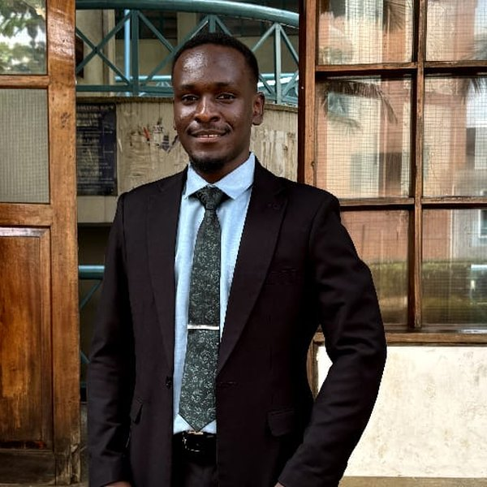

I'm Chune Evans Kihonji, a Civil Engineer completing my BSc in Civil Engineering at the University of Nairobi, graduating in October 2026. Through attachments with Kakamega Municipality and Kenya Railways Corporation, I've gained hands-on experience in site inspections, materials testing, quality control and project documentation.
I've worked alongside architects, surveyors and structural engineers on road, drainage, sewage, street lighting and building projects, checking work against drawings and specifications and preparing inspection reports. I read structural and architectural drawings comfortably and work to quality and safety standards.
Beyond the site, I've led student bodies at UoN, including ACES, ESA and the Environmental Club, and I'm building a second discipline in data science and analytics. I'm based in Kiminini, Trans Nzoia County, hold a valid driving licence and am available for immediate resumption.
Materials Testing and Research Division. Assisted the County Structural Engineer with site supervision and inspections, verified compliance with drawings and specifications, monitored quality, material usage and progress, and prepared inspection reports. Took part in KISIP road, drainage, sewage and street lighting projects.
Conducted site inspections, assisted in pre-tender assessments and reporting, and gained exposure to take-off preparation and construction documentation.
First Year Civil Engineering Representative and Publicity Secretary (ACES-UoN), Academic Secretary (ESA-UoN) and Publicity Secretary (UoN Environmental Club).
Open to graduate engineering roles and collaborations. Based in Kiminini, Trans Nzoia County (about 20 minutes from Kitale) and available for immediate resumption.
A civil engineering graduate with hands-on experience in site inspections, materials testing, quality control and project documentation, working alongside architects, surveyors and structural engineers on road, drainage, sewage and building projects.
From the site to the drawing board: inspection, quality control and the digital tools that support them.
Site inspection
Quality monitoring
Materials testing
Drawing review
KISIP road works
Inspection reports
I extract meaning from messy datasets. Predictive models, interactive dashboards, and automation pipelines — built to solve infrastructure, transport, and development problems that matter in Africa.
Latest public work — notebooks, scripts, and engineering tools.
Hands-on project exposure from my engineering attachments: road, drainage, sewage, street lighting, materials testing and rail.
Analytics, machine learning, and data engineering — focused on infrastructure, transport, and development challenges in Kenya and Africa.
Engineering, data science, African development, and the ideas that connect them. Written for engineers, analysts, and curious thinkers.